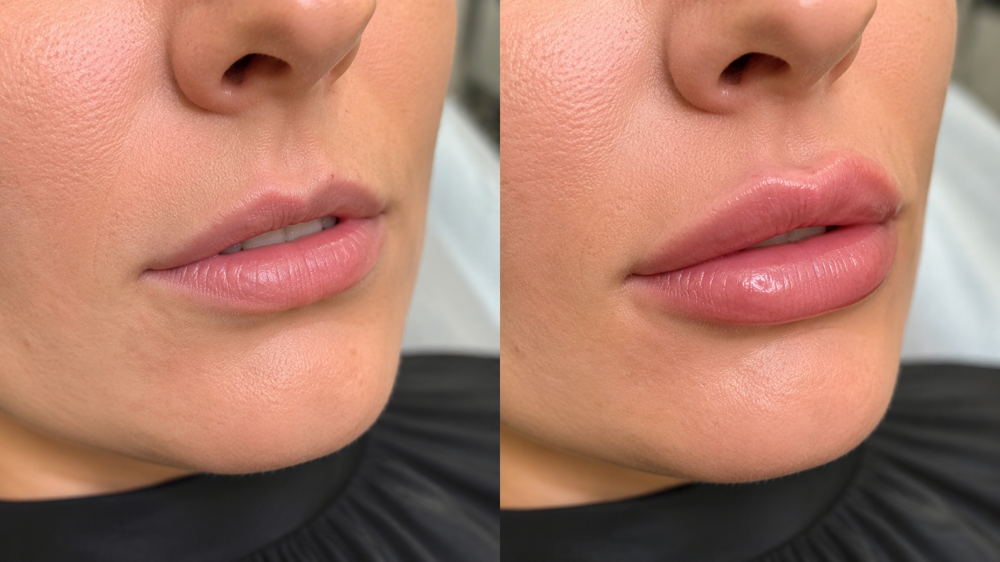

Тонкие губы: как контурная пластика помогает вернуть объем и гармонию лица
Тонкие губы могут быть врожденной особенностью или становиться менее объемными с возрастом. Постепенно снижается выработка коллагена и гиалуроновой кислоты, губы теряют увлажненность, контур становится менее четким, появляются мелкие морщины вокруг рта. Современная контурная пластика губ в Севастополе позволяет деликатно скорректировать эти изменения и подчеркнуть естественную красоту без эффекта «перекачанных» губ.
В клинике косметологии ЗимаКлиник контурная пластика является одним из направлений инъекционной косметологии. Помимо этой процедуры специалисты клиники выполняют мезотерапию, биоревитализацию, плазмотерапию, нитевой лифтинг и другие современные методы омоложения.
Кому подойдет контурная пластика губ?
-
Процедура рекомендуется пациентам, которые хотят:
- увеличить объем тонких губ;
- сделать контур более четким;
- устранить асимметрию;
- восстановить объем, утраченный с возрастом;
- сделать губы более увлажненными и выразительными;
- получить естественный результат без изменения индивидуальных черт лица.
Главная задача врача — не просто увеличить губы, а создать гармоничные пропорции, которые будут соответствовать особенностям внешности пациента.
Как проходит процедура?
Перед процедурой врач-косметолог в Севастополе проводит консультацию, оценивает анатомические особенности лица, обсуждает пожелания пациента и подбирает оптимальный объем препарата.
Контурная пластика выполняется с помощью современных филлеров на основе гиалуроновой кислоты. Препарат равномерно распределяется в тканях, благодаря чему губы становятся более объемными, мягкими и естественными на вид.
Сама процедура занимает около 30–40 минут. После нее пациент практически сразу возвращается к привычному образу жизни, соблюдая рекомендации врача.
Почему важно обращаться в медицинскую клинику?
Контурная пластика — это медицинская процедура, поэтому выполнять ее должен только квалифицированный специалист.
В ЗимаКлиник каждому пациенту разрабатывают индивидуальный план коррекции и сопровождают до получения желаемого результата. Такой комплексный подход является одним из принципов работы клиники.
-
Специалист учитывает:
- форму лица;
- пропорции губ;
- возрастные изменения;
- особенности кожи;
- наличие противопоказаний.
Благодаря индивидуальному подходу удается добиться естественного результата без чрезмерного объема.
Результат контурной пластики

После процедуры губы становятся более выразительными, сохраняют естественную подвижность и выглядят гармонично. Дополнительно гиалуроновая кислота способствует увлажнению тканей, поэтому губы выглядят более гладкими и ухоженными.
Эффект сохраняется индивидуально и зависит от особенностей организма, образа жизни и выбранного препарата.
Результат контурной пластики
Если вы хотите сделать контурную пластику губ в Севастополе, специалисты клиники косметологии ЗимаКлиник помогут подобрать оптимальный объем коррекции именно для вас. Главная цель процедуры — подчеркнуть природную красоту, сохранить естественную мимику и добиться гармоничного результата.
Перед процедурой проводится обязательная консультация врача-косметолога, который ответит на все вопросы, исключит противопоказания и составит индивидуальный план коррекции.